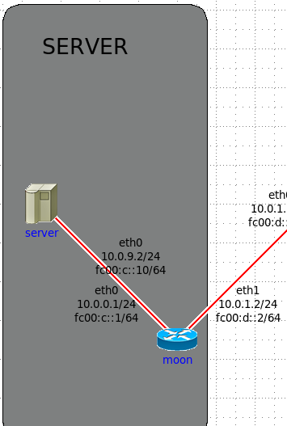
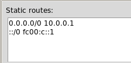
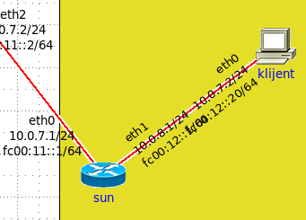
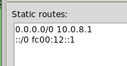
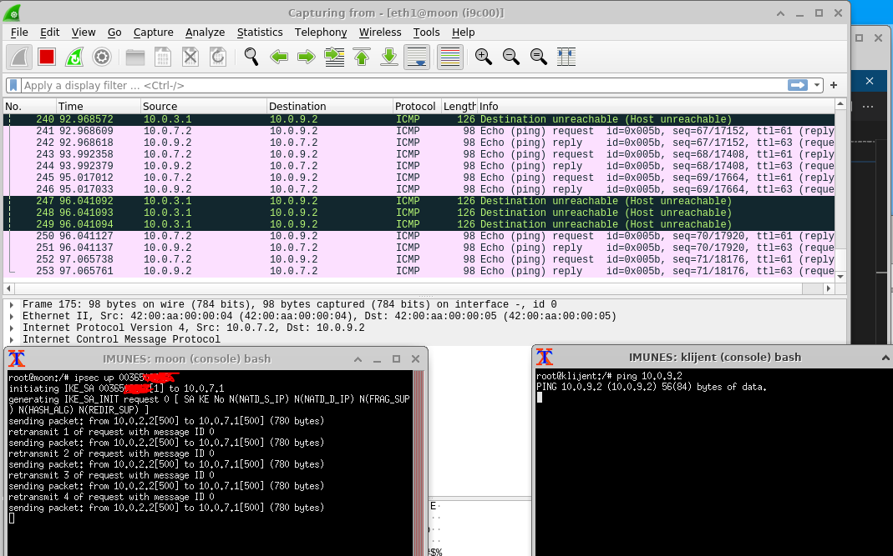
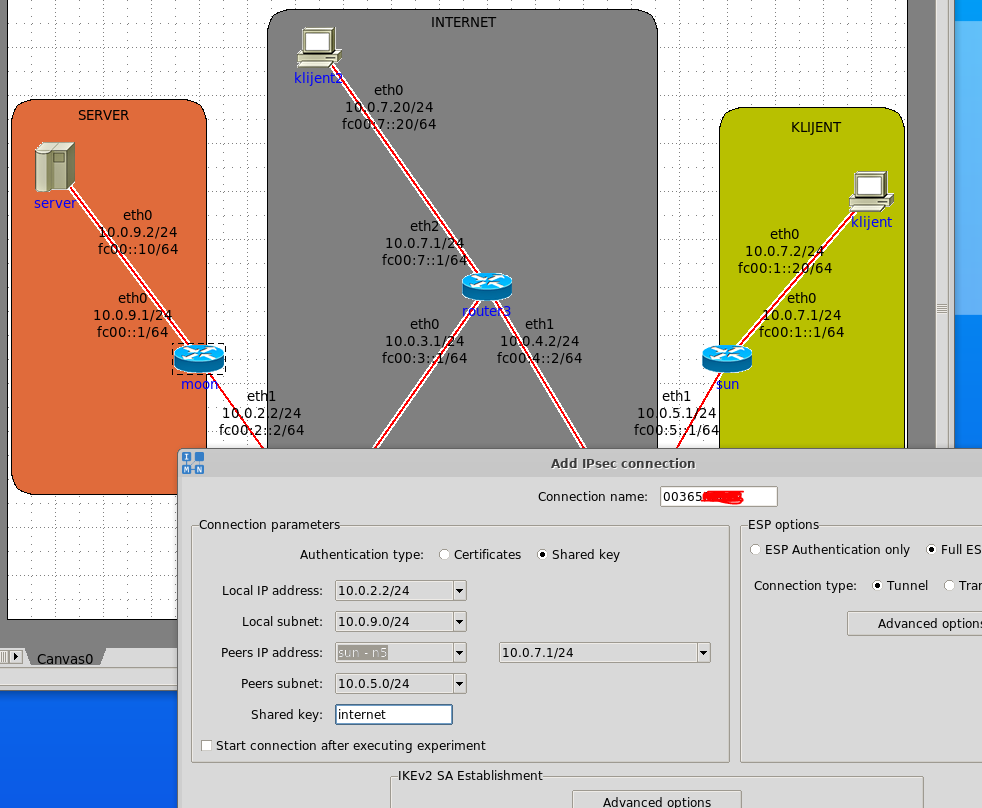
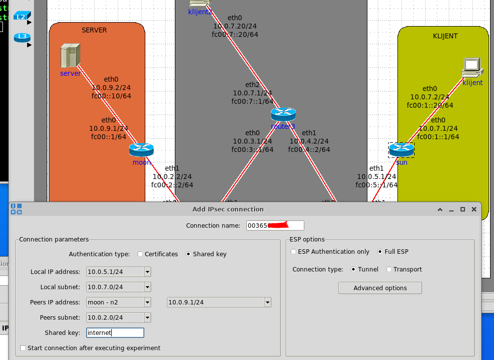
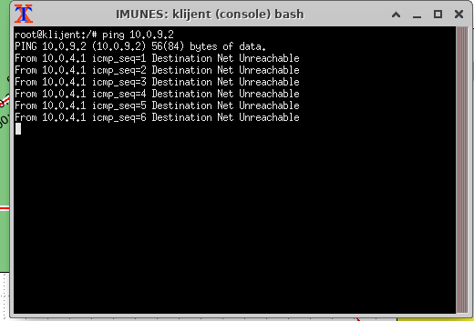

DnkCkv da, javi ak rješiš
Sulejman realno reseto sam par put i promijenio lozinke i stavljo kvacice na open connection after experiment starts i nista se jebeno ne dogadja
DnkCkv promjeni malo adrese na ruterima išamaraj tu mrežu i onda probaj restartat virtualku i opet probat
DnkCkv ovo mi je bilo i sad mi je proradilo, ugasio sam imunes, pokrenuo opet iz terminala i postavio sve isto ko i prije za ipsec
blablajar ugasio sam imunes, pokrenuo opet iz terminala
Izgleda da je imunes povezan sa routerima hrvatskih telekomunikacijskih tvrtki. Isto je riješenje problema. “jeste probali ugasiti pa upaliti”
kak treba izgledat paket nakon sto se uspostavi IPsec ? i sta ispise ova metoda xfrm state jel moze neko poslat ? Hvala
𝐓𝐇𝐄 𝐒𝐄𝐂𝐑𝐄𝐓 - 𝐂𝐋𝐔𝐁
Kaj ste u prvom napisali za zaglavlja? Znam da treba ići GRE-enkapsulacija ali to ne vidim hihi
Daeyarn ja sam static routes mijenjala samo na klijentu i serveru i to samo adresu sučelja rutera do njih pokraj 0.0.0.0/0
EDIT: malo sam se nespretno izrazila
[obrisani korisnik] aha ok, al jel znas npr na koju bih static adresu trebao promijeniti server ovdje  jer ne znam koju adresu da upisem a da radi
10.0.0.1 kraj 0.0.0.0/0 na serveru
[obrisani korisnik]    ovako su mi na klijentu i na serveru, ne kuzim zasto ne radi ali hvala ti
 Za drugi zadatak: ne kuzim zasto mi neki pingovi u wiresharku fali-aju, ali neki uredno prolaze i dobivaju reply? Takoder za ipsec up <jmbag> dobijem samo retrasmit i nikad ne dobijem established successfully. Pokusao sam terminate, ponovno postaviti IPsec i paliti ponovno imunes par puta
Ima netko ideju?
anon00 Možda jer nije dobro uspostavljena veza. Kak ti izgledaju polja za konfiguraciju?
[obrisani korisnik] Ako na ovo mislis Moon: 
Na Sun: 
Daeyarn a nez, ni meni nije isprve, pa sam išla ispočetka i mislim da prvo dodala rutere, promijenila im adrese, pa dodala pc/host, spojila, promijenila adrese i statičke rute
Daeyarn Pokusaj izbrisati taj sun. Malo mi je cudno da mu je unutarnja adresa 10.0.8, a vanjska 10.0.7 koja bi trebala biti unutarnja
anon00 prva slika, nakon odabira sun prvo pišeš 10.0.5.1 pa 10.0.7.0, analogno za moon
[obrisani korisnik]
anon00 hvala vam, izbrisao sam sun i ponovno ga postavio, sad mi je ovak ispis tho 
Daeyarn probaj pingati s rutera pa ak ti prolazi
[obrisani korisnik] nece isto je unreachable, budem probao jos zbrisat pa opet ili nekj